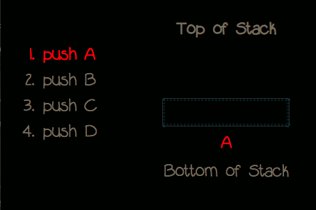
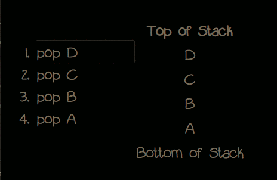
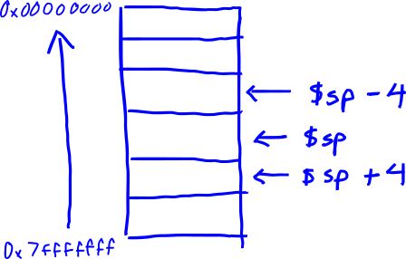
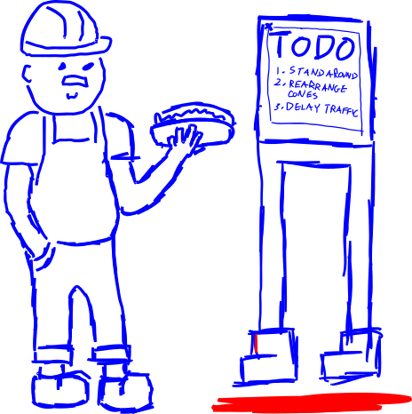
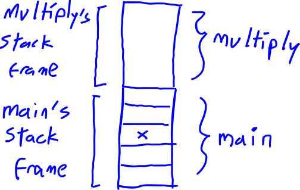

Part 4: The Stack
The concept of the stack is not just limited to MIPS, but it is important while learning MIPS assembly to understand where automatic variables are stored and for learning calling conventions.
What is the stack? (logical)
Conceptually, the stack refers to a method of organizing and storing data where elements stored most recently are accessed first. This is also called Last-in-First-out (LIFO).
As an analogy, imagine a stack of plates. The easiest plate to grab without another plate breaking is directly from the top.
Data elements are pushed onto the stack and popped off of the stack.
For example, if we were to push elements in the order A, B, C, D.

The stack would look like:
| Top of Stack |
|---|
| D |
| C |
| B |
| A |
| Bottom of Stack |
Then when we would pop elements off of the stack, they would pop in the order D, C, B, and A:

What is the stack? (memory)
In program memory, there is a section of memory reserved also called the stack. At a glance it operates just like the logical stack we have just mentioned with some implementation nuances.
In MIPS-32, the stack is aligned by 4 bytes and each byte has an associated 4-byte memory address. The $sp register which stands for stack-pointer, stores a stack address, typically the top of the stack.
Importantly, the stack grows from high to low memory. This means when we subtract the stack pointer, we are actually moving up on the stack. When we add to the stack pointer, we are moving down the stack.
This effect can be seen by the visualization below:

In x86, push and pop are instructions used to operate on the memory stack; however, MIPS does not have the push or pop instructions.
In MIPS, push and pop can be achieved in two instructions by loading values to a stack memory location and modifying the stack pointer.
An example of two instructions equivalent to a push 100 might be:
- sub $sp, $sp, 4
- lui ($sp), 100
After all of this mention of push and pop, this is not to say that stack elements cannot be accessed directly. Often stack elements are accessed by an offset from the current stack pointer.
What is the stack used for? (memory)
The stack is used to store data within a stack frame (local variables). Every function call of a program has its own stack frame. When a new function is called, the old function must save its associated stack frame and return address before executing the new function. Thus, this information is also stored on the stack.
As an analogy, imagine a construction worker who follows a set of tasks written on a board. He goes somewhere to complete the work, then he looks for a red line on the ground to return to the board to check it for the next task.

This will be discussed further in Part 7: Calling Conventions
In the below code, when we call our function multiply(), main will save its own stack frame and return address so as when the function multiply() returns, then code execution will continue in main.
int multiply(int a, int b) {
return a * b;
}
void main() {
// save stack frame and return address before calling multiply()
int x = multiply(5, 4);
// ... more code would continue here after multiply()
}
